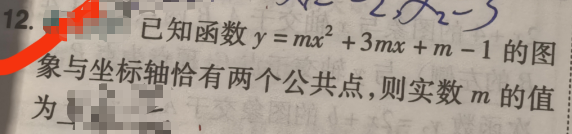

📷 点击查看原图
[2026 中考题] 已知函数 的图象与坐标轴恰有两个公共点，则实数 的值为 ______。
| 知识点 | 说明 |
|---|---|
| 一次函数退化 | 时 ，与坐标轴只有 1 个公共点 |
| 二次函数与坐标轴交点 | 由 轴交点 与 轴交点（ 决定个数）共同决定 |
| 判别式 | 抛物线与 轴恰 1 个交点（顶点在 轴上） |
| 过原点 | 常数项 （即 ） 抛物线过原点 |
| 恰两个公共点的拆分 | (1) 过原点 ＋ 与 轴再交于另一点（原点被两轴共享）； (2) （与 轴 1 点）＋ 轴另 1 个非原点交点。 |
若 ，函数退化为一次函数 ，是一条平行于 轴的直线。
此时图象与坐标轴共有 个公共点，不满足"恰有两个公共点"。
令 ，得 ，因此抛物线与 轴交于
当 时，这个交点正好是原点 （即抛物线过原点）。
对抛物线而言，与两轴的总交点 =（ 轴交点数）+（ 轴交点数）。要恰好等于 ，有两种可能：
| 情形 | 条件 | 几何意义 | 公共点构成 |
|---|---|---|---|
| ① 抛物线过原点 | 轴交点 = ， 轴再交于另一点 | 原点 + 另 1 点 → 共 个 | |
| ② 抛物线顶点在 轴上 | 判别式 （且 ） | 轴恰 个交点； 轴 个非原点交点 | → 共 个 |
当 时，函数化为
令 ：，解得
因此与 轴交于 和 ，与 轴也交于 （同一点重合）。
故共有 个公共点：、。✓
抛物线与 轴交点由方程 决定，其判别式为
令 。因 ，两边除以 ，得
验证：此时 ，故 轴交点 不在 轴上；抛物线顶点落在 轴上，与 轴恰有 个交点。
故共有 个公共点。✓